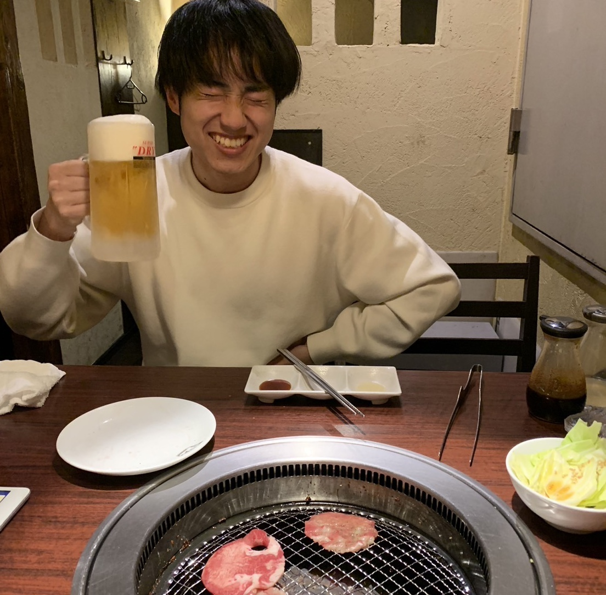

私について

こんにちは！浜崎真之亮です。九州大学システム情報科学府で情報経済学に関する研究を行っています。オークションやマッチング理論を現実の課題に応用し、医療現場の研修医配属など、より効率的な制度設計に取り組んでいます。
週末は糸島をドライブしたり、プログラミング学習で新しい技術を試したりして気分転換しています。
趣味・興味のあること
- 競技プログラミング (AtCoderでPythonを使用)
- バスケットボール (観戦・プレーともに楽しむ)
- 筋トレ (週2～3回のペースで継続)
- 旅行 (最近は東京へ3週間滞在)
研究テーマ・活動内容
情報経済学分野で情報伝播を伴うメカニズムデザインを中心に研究中。特に両方向マッチングにおける性質分析や新規アルゴリズムの開発などを通じて、学会発表や論文執筆も積極的に行っています。
- 戦略的操作の非自明性を満たす新規メカニズムの提案
- 学会発表・論文執筆による知見発信
学会発表・参加予定
- 2024年3月 情報処理学会全国大会
- 2024年3月 SMASH2024
- 2024年5月 人工知能学会全国大会
- 2025年2月 ICAART2025